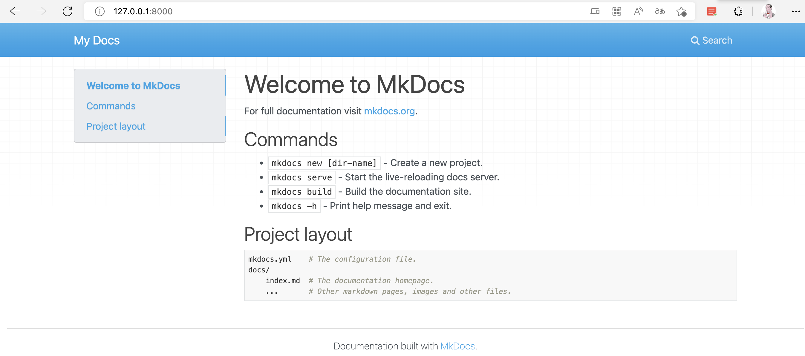

mkdocs
1.简介
MkDocs（Markdown Documents）是一个快速、简单的静态网站生成器，用于将 Markdown 文档组织起来构建成有层次、美观的文档站点。
MkDocs基于python3编写，被很多知名开源项目选中，用于搭建和项目相关的文档网站。比如 Python 里知名的 Web 圈里的 django-rest-framework、FastAPI 以及基于 Go 编写的云网关代理服务器 traefik 等项目的官方文档站点，都是通过 MkDocs 进行搭建。
1. 1官方文档
- 官方文档：MkDocs
- 中文文档：MkDocs中文文档 (zimoapps.com)
2. 快速上手
2.1 本地环境
# 1. 创建存放文档文件的目录（名字随意）
mkdir mydocs
# 2. 切换到mydocs目录
cd mydocs
# 3.搭建python虚拟环境（可选，本地环境安装也可以）
virtualenv venv
source venv/bin/activate # 激活虚拟环境
- 安装mkdocs包
2.2 生成站点项目
- 创建项目
- 运行项目
- 查看项目
在浏览器输入http://127.0.0.1:8000/即可查看刚才创建的文档项目

2.3 项目文件
docs目录：存放md文件的目录，以文件夹层叠表示层级-
index.md不可删除，默认是首页展示的md文件，可以自定义编辑首页需要展示的内容 -
mkdocs.yml:项目的配置文件，用来配置站点名称、目录层级结构、主题、插件等
3. 配置项目
3.1 页面搭建
- 编写md文件
- 在
mkdocs.yml文件添加目录层级
- 以上设置会生成一个带层级的目录，和一个外部的文件
根据知识体系，可以以
目录/文档.md的形式，自由编写树状结构
3.2 外观设置
-
使用
material
- 修改
mkdocs.yml主题配置：

4. 自定义样式
material由于是英文排版样式，在中文展示上不是很友好，做以下调整优化
- 参考
material官方文档修改：Material for MkDocs (squidfunk.github.io)
4.1 中文搜索
- 网站为英文情况下，中文搜索不起作用，修改为中文，可以支持中文搜索，但不支持分词
4.2 导航设置
theme:
name: material
features:
# 返回顶部
- navigation.top
# 锚点跟踪
- navigation.tracking
- header.autohide
# 横向导航
- navigation.tabs
- navigation.expand
# - toc.integrate
- content.tabs.link
4.3 自动夜间模式
# 自动夜间模式并修改主题色为绿色
palette:
# 白天模式
- scheme: default
primary: teal
accent: teal
toggle:
icon: material/lightbulb
name: 切换夜晚模式
# 黑夜模式
- scheme: slate
primary: black
toggle:
icon: material/lightbulb-outline
name: 切换白天模式
4.4 md渲染样式
# markdown渲染样式
markdown_extensions:
- pymdownx.highlight:
anchor_linenums: true
linenums_style: pymdownx-inline
- pymdownx.inlinehilite
- pymdownx.snippets
- pymdownx.superfences
- pymdownx.keys
- tables
- def_list
- pymdownx.tasklist:
custom_checkbox: true
4.5 自定义css
- 在doc目录下新增
stylesheets/extra.css - 看哪不爽，在网页审查css，修改对应css
/* 修改代码块字体和颜色 */
:root > *{
--md-code-font: "Source Code Pro,Consolas,Liberation Mono,Menlo,Courier,monospace";
/*--md-code-hl-string-color: #DD1144;*/
/*--md-code-fg-color : #1c7d4d*/
}
/* 修改代码块样式 */
.md-typeset code {
font-size: 14px;
font-weight: 400 !important;
line-height: 30px;
color: #dd1144;
}
/* 正文 */
.md-typeset {
line-height: 30px;
font-size: 15px;
color: #222;
letter-spacing: .034em;
font-family: system-ui,-apple-system,BlinkMacSystemFont,Helvetica Neue,PingFang SC,Hiragino Sans GB,Microsoft YaHei UI,Microsoft YaHei,Arial,sans-serif;
}
/* 目录行间距 */
.md-nav {
line-height: 20px;
}
/* h2标题 */
.md-typeset h2 {
font-size: 18px;
color: rgb(51, 51, 51);
font-weight: bold;
font-family: mp-quote, -apple-system-font, BlinkMacSystemFont, "Helvetica Neue", "PingFang SC", "Hiragino Sans GB", "Microsoft YaHei UI", "Microsoft YaHei", Arial, sans-serif;
}
/* h3标题 */
.md-typeset h3 {
font-size: 16px;
color: rgb(51, 51, 51);
font-weight: bold;
font-family: mp-quote, -apple-system-font, BlinkMacSystemFont, "Helvetica Neue", "PingFang SC", "Hiragino Sans GB", "Microsoft YaHei UI", "Microsoft YaHei", Arial, sans-serif;
}
/* h1标题 */
.md-typeset h1 {
font-size: 22px;
line-height:1.4;
font-weight:400;
margin-bottom:14px;
color: #222;
font-family:system-ui,-apple-system,BlinkMacSystemFont,Helvetica Neue,PingFang SC,Hiragino Sans GB,Microsoft YaHei UI,Microsoft YaHei,Arial,sans-serif
}
/* 抗锯齿 */
body {
-webkit-font-smoothing:subpixel-antialiased;
}
5. 标注
5.1 开启配置
5.2 基础用法
Note
这是一段文字或者任何markdown样式
5.3 更改标题
我是标题
这是一段文字或者任何markdown样式,要缩进
5.4 无标题
这是一段文字或者任何markdown样式,要缩进,无标题模式不可以折叠
5.5 折叠块
Note
这是一段文字或者任何markdown样式,要缩进
5.6 默认展开的折叠块
5.7 自带图标
6. 按钮
6.1 配置
6.2 基础使用
按钮6.3 按钮填充
按钮7. 带标题的代码块
8. 分组展示
8.1 代码块分组
8.2 其他内容分组
=== "Unordered list"
* Sed sagittis eleifend rutrum
* Donec vitae suscipit est
* Nulla tempor lobortis orci
=== "Ordered list"
1. Sed sagittis eleifend rutrum
2. Donec vitae suscipit est
3. Nulla tempor lobortis orci
- Sed sagittis eleifend rutrum
- Donec vitae suscipit est
- Nulla tempor lobortis orci
- Sed sagittis eleifend rutrum
- Donec vitae suscipit est
- Nulla tempor lobortis orci
8.3 折叠内分组
!!! example
=== "Unordered List"
``` markdown
* Sed sagittis eleifend rutrum
* Donec vitae suscipit est
* Nulla tempor lobortis orci
```
=== "Ordered List"
``` markdown
1. Sed sagittis eleifend rutrums
2. Donec vitae suscipit est
3. Nulla tempor lobortis orci
```
Example
9. 远程部署
9.1 项目打包
- 部署时候将
site目录下的所有文件传到服务器
9.2 git
Git安装和使用：git全套学习
- git 全局设置
# 设置用户名，本地的，不需要和github等一致
git config --global user.name “username”
# 设置邮箱，本地的(不需要引号)
git config --global user.email "邮箱"
- git ssh key生成
- 在根目录
.ssh下找到id_rsa.pub文件，并复制全部内容
9.3 github/gitee
1.配置ssh key
2.创建仓库，开启page服务

3.克隆仓库
4.将site目录下的所有文件复制到克隆出来的文件夹内
5.推送到GitHub
6.访问GitHubpage